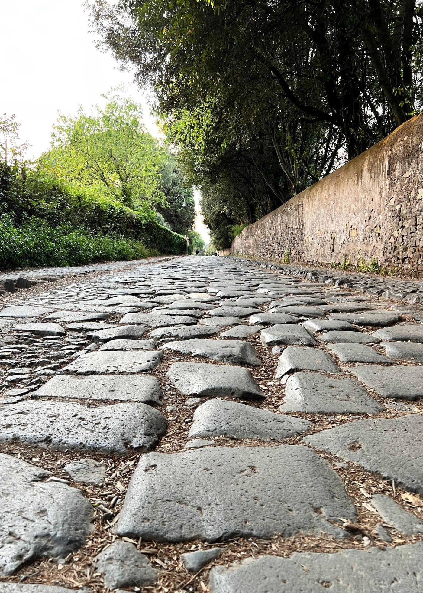

Romanisti · Library
Codex I
De Aeternitate
Edition 1.0A · Edition 1.0A
Architectural Overview
Table of Contents
Institutional Naming
Romanisti
identifies the institution and publication.
romanisti
identifies the supporters of AS Roma.
Romanisti.org
identifies the institution’s digital home.
Edition Record
- Institution
- Romanisti
- Work
- Codex I — De Aeternitate
- Edition
- 1.0A
- Status
- Edition 1.0A
- Digital Home
- Romanisti.org
A Romanisti Constitutional Manuscript
Codex I
De Aeternitate
Digital Edition 1.0A
Book I
The Eternal City
Section I
The City That Outlived Empires
"A city is not measured by what it builds in a generation, but by what it chooses to preserve across generations." — Romanisti, Codex I
There are older cities than Rome.
There have been richer cities, larger cities, and cities whose influence burned brighter for a moment in history. Yet when civilizations speak of endurance, they return, almost instinctively, to Rome.
Not because Rome escaped decline.
Not because it was untouched by war, disaster, or failure.
Rome endured because it possessed something greater than uninterrupted success. It possessed continuity. Across centuries of triumph and collapse, emperors and republics, prosperity and ruin, there remained an identity recognizable enough that each generation believed it worth preserving.
That distinction matters.
A monument may survive because its stone is strong. An institution survives because its principles are stronger.
Romanisti begins with Rome because Rome teaches that permanence is never accidental. It is the result of countless deliberate choices made by people who understood they were temporary caretakers of something larger than themselves.
The builders of Rome rarely worked for applause. Many never lived to see the completion of the structures they began. They carved stone knowing another generation would finish the work. Their ambition was measured not by ownership, but by contribution.
Institutions worthy of enduring are built the same way.
Every generation inherits a foundation it did not lay. Every generation improves or diminishes that inheritance through the choices it makes. No generation begins from nothing, and none has the right to behave as though it owns what history has entrusted to it.
This is the philosophy Romanisti chooses to inherit.
We do not begin with football because football is immediate.
It lives in ninety minutes.
In league tables.
In transfer windows.
In celebrations and disappointments that can change within a week.
Rome invites us to think differently.
The city asks longer questions.
What deserves to remain?
What should be preserved when fashions disappear?
What ideas continue to serve long after those who first imagined them are gone?
Those questions are not historical curiosities.
They are editorial responsibilities.
Every article Romanisti publishes becomes part of an institution larger than the moment that inspired it. Some stories belong to their day. Others will speak across generations. All deserve the honesty and judgment expected of work that may one day become part of the historical record.
The internet rewards immediacy.
History rewards judgment.
Romanisti will always choose judgment.
That choice demands patience, because credibility is accumulated slowly and surrendered quickly.
Rome reminds us that greatness is rarely dramatic while it is being built.
The stones of the Pantheon were laid one at a time.
The arches of the Colosseum rose through ordinary labor repeated over years.
The city's identity emerged not from a single extraordinary act, but from thousands of disciplined decisions made consistently across generations.
Journalism deserves the same respect.
A publication is not defined by one exceptional article.
It is defined by whether the thousandth article reflects the same standards as the first.
Readers should recognize Romanisti not because every story agrees with their opinions, but because every story reflects the same commitment to fairness, clarity, and thoughtful craftsmanship.
This is why Rome stands at the beginning of this Codex.
Not as decoration.
Not as nostalgia.
Not as branding.
Rome stands here because it represents the standard to which Romanisti aspires.
To endure without becoming rigid.
To evolve without abandoning identity.
To welcome new generations without forgetting those who came before.
To build carefully enough that what is created today deserves to be inherited tomorrow.
That is a higher ambition than publishing quickly.
It is a higher ambition than growing rapidly.
It is even a higher ambition than becoming influential.
Influence fades.
Reputation can be lost.
Institutions endure only when every generation chooses, again and again, to place principle above convenience.
Romanisti makes that choice at the very beginning.
Everything that follows in this Codex—and everything that follows in the life of this publication—stands upon it.
Closing Reflection
Rome did not endure because every generation inherited a finished city.
It endured because every generation inherited a responsibility.
They chose carefully what deserved repair.
They rebuilt what deserved rebuilding.
They preserved what deserved preservation.
Romanisti must do the same.
CODEX I
Book I — The Eternal City
Section II
Institutions Outlive Individuals
"Great institutions are built by people humble enough to know they will not be the ones who finish them." — Romanisti, Codex I
Every institution begins with an individual.
Every enduring institution learns to outgrow them.
This is one of the quiet paradoxes of lasting work. Vision often begins in the mind of one person, but permanence is achieved only when that vision becomes larger than its creator.
Rome teaches this lesson with remarkable clarity.
Few who laid its foundations imagined the city as we know it today. Roads were extended by people who never met those who first surveyed them. Temples were restored by generations who understood that preservation was as noble as creation. Public spaces were maintained by citizens who inherited them not as owners, but as custodians.
The city survived because no single generation mistook stewardship for possession.
Romanisti chooses to inherit the same philosophy.
Any institution that depends entirely upon one voice, one personality, or one generation may achieve recognition, but it will struggle to achieve permanence. When institutions become inseparable from individuals, their future becomes as fragile as the lives and careers of those individuals.
Romanisti rejects that model.
Romanisti is founded by people, but it is not built around them.
Its standards must be clear enough that future editors can uphold them without imitating their predecessors. Its visual language must remain recognizable even as designers evolve it. Its editorial integrity must survive changes in technology, ownership, and leadership because those qualities are rooted in principles rather than personalities.
This philosophy demands humility.
Every contributor should leave a mark upon Romanisti, but no contributor should become larger than Romanisti itself.
The finest article ever published here will eventually be followed by another.
The most celebrated editor will one day hand responsibility to someone else.
Even the founders must accept that success is measured not by how indispensable they become, but by how well they prepare others to continue the work.
That is not a loss of authorship.
It is the fulfillment of stewardship.
Institutions endure because they invite successive generations to participate in something already worthy of their care.
The publication you inherit is a gift.
The publication you leave behind is your legacy.
Romanisti asks every writer, editor, designer, photographer, developer, and future publisher to make one promise:
Leave it stronger than you found it.
If each generation keeps that promise, the institution becomes greater than any individual achievement within it.
That is how cities endure.
That is how publications endure.
That is how Romanisti intends to endure.
Closing Reflection
The highest achievement of a founder is not to remain indispensable.
It is to leave behind principles worthy of another generation's care.
CODEX I
Book I — The Eternal City
Section III
Craft Is an Act of Stewardship
"What we build carelessly, others inherit unwillingly." — Romanisti, Codex I
Craft is often mistaken for decoration.
It is treated as the final layer placed upon work after the serious decisions have already been made. A flourish. A finish. A mark of taste.
But true craft is not ornament.
It is responsibility made visible.
Rome teaches this distinction in stone.
Its greatest works were not enduring because they were beautiful alone. They endured because beauty was joined to structure, proportion, discipline, and purpose. The arch was not merely elegant. It carried weight. The road was not merely impressive. It connected people, armies, markets, and cities. The aqueduct was not merely monumental. It brought life.
The work was beautiful because it served.
That is the kind of craft Romanisti must inherit.
A publication is built from materials less permanent than stone, but no less capable of shaping memory. Words, images, headlines, captions, layouts, sources, corrections, code—each becomes part of what the reader experiences. Each either strengthens trust or weakens it. Each either honors the institution or treats it casually.
There is no neutral craft.
A careless headline teaches readers to distrust the article beneath it.
A poorly sourced claim weakens the paragraph around it.
A rushed correction suggests that accuracy was secondary until embarrassment made it necessary.
A cluttered page tells the reader that attention is something to be taken rather than respected.
A design without restraint treats seriousness as performance.
A line of code written without care becomes someone else's burden.
Craft is not separate from integrity.
It is one of integrity's forms.
This is why excellence becomes a moral responsibility when work is intended to outlive the person who made it. If Romanisti is built only for the present moment, convenience may appear harmless. But if Romanisti is built as an institution, every shortcut becomes an inheritance.
Someone will inherit the archive.
Someone will inherit the design system.
Someone will inherit the editorial standards.
Someone will inherit the code.
Someone will inherit the reputation.
The question is whether they will inherit a burden or a foundation.
The Roman builder understood this better than most modern creators. Stone did not forgive negligence. A weak arch collapsed. A poorly measured road failed. A careless foundation betrayed every structure placed upon it. Craft was not romantic. It was practical. It was civic. It was an obligation to people the builder might never meet.
Romanisti must think the same way.
The writer must write for the reader who arrives years later, searching not for the emotion of the day, but for understanding.
The editor must protect the sentence not because elegance matters for its own sake, but because clarity is a form of respect.
The designer must remove what competes with the words, because attention is not an infinite resource.
The photographer must choose an image that deepens meaning rather than decorates space.
The developer must build with the future maintainer in mind.
The founder must create systems strong enough that the institution is not dependent on the founder.
This is craft as stewardship.
It asks each contributor to see beyond authorship and toward inheritance. The work is not complete when it is published. It becomes part of Romanisti. It joins the archive. It teaches future contributors what the publication values. It becomes precedent.
That is why standards matter.
A single careless decision may appear small in isolation. But institutions are not weakened all at once. They are weakened by the accumulation of exceptions. One rushed article. One vague correction. One indulgent design choice. One misleading image. One compromise explained away as temporary.
Temporary compromises have a way of becoming permanent character.
The reverse is also true.
One carefully written article creates expectation.
One transparent correction creates trust.
One restrained layout creates identity.
One well-maintained system creates continuity.
One generation's discipline becomes the next generation's inheritance.
Rome was not built by one act of genius. It was built by repeated acts of care.
Romanisti must be built the same way.
Craft, then, is not the pursuit of perfection. Perfection is too fragile a word. It often becomes vanity disguised as discipline. Craft is something more durable. It is the habit of taking the work seriously because the reader, the institution, and the future deserve that seriousness.
There will be days when speed is tempting.
There will be stories that reward reaction.
There will be pressure to publish before understanding has matured.
There will be design trends that promise novelty.
There will be technologies that make shortcuts easy.
Romanisti should not reject change.
Rome itself never endured by standing still.
But change must be judged by what it strengthens. A new tool is welcome if it deepens clarity. A new format is welcome if it improves understanding. A new design is welcome if it serves the reading experience. A new platform is welcome if it preserves the institution's standards.
Innovation without stewardship is merely motion.
Romanisti does not exist to move constantly.
It exists to move deliberately.
That deliberateness is not slowness. It is care. It is the difference between hesitation and judgment. It is the confidence to say that not every moment deserves publication, not every idea deserves design, and not every opportunity deserves pursuit.
This too is craft.
Knowing what to leave out.
Knowing what to preserve.
Knowing when restraint says more than abundance.
The strongest institutions are not built by people who add endlessly. They are built by people who understand what must remain.
A great publication is not made only by what it publishes.
It is also made by what it refuses to publish.
By what it refuses to exaggerate.
By what it refuses to decorate.
By what it refuses to compromise.
In that refusal, craft becomes character.
Romanisti must never treat excellence as luxury. Excellence is not something added after the work is done. It is the manner in which the work is done.
The headline is stewardship.
The paragraph is stewardship.
The caption is stewardship.
The source is stewardship.
The correction is stewardship.
The page is stewardship.
The code is stewardship.
The archive is stewardship.
Everything teaches.
Everything remains.
Everything is inherited.
Closing Reflection
Craft is what the present owes the future.
Stewardship is remembering that the future will one day read, use, question, and inherit what we leave behind.
CODEX I
Book I — The Eternal City
Section IV
What Are We Building That Deserves to Endure?
One Question
What makes an institution worthy of another generation?
"An inheritance is not measured by what is received, but by what is worth preserving." — Romanisti, Codex I
Every institution speaks of endurance.
Few speak first of worthiness.
The desire to endure is natural. Every founder hopes that what is built today will remain tomorrow. Every generation imagines that its work will survive its own lifetime. Yet endurance is not a reward granted simply because something exists. Time owes nothing to institutions. Neither do future generations.
To endure is not a right.
It is a judgment.
Rome understands this better than perhaps any city on earth.
Its history is not a story of everything being preserved. It is a story of countless generations deciding, again and again, what deserved to be restored, rebuilt, defended, adapted, and carried forward. Temples fell. Walls were repaired. Roads were extended. Ideas evolved. Yet through every age, something recognizably Roman remained.
Not because permanence was guaranteed.
Because worthiness was continually renewed.
This is the responsibility inherited by every institution that aspires to outlive its founders.
Romanisti cannot ask future generations to preserve its name.
It cannot ask them to preserve its pages.
It cannot ask them to preserve its designs, its technologies, or even its methods.
Those things belong to their own time.
What Romanisti may ask is something more demanding.
That every generation finds the institution still worthy of its care.
Worthiness is never established by declaration.
It is accumulated.
Every carefully sourced article strengthens it.
Every transparent correction strengthens it.
Every act of editorial restraint strengthens it.
Every design choice made in service of clarity strengthens it.
Every compromise refused strengthens it.
Character is not built in extraordinary moments.
It is built in ordinary decisions repeated faithfully over time.
That is why responsibility matters.
Responsibility does more than protect standards.
Responsibility creates worthiness.
An institution becomes worthy not because it claims noble principles, but because it demonstrates them consistently enough that others begin to trust them. Trust becomes reputation. Reputation becomes inheritance. Inheritance becomes responsibility once more.
Thus every generation stands in two places at once.
It is heir.
And it is builder.
It receives the labor, judgment, mistakes, and wisdom of those who came before. It also accepts responsibility for leaving the institution stronger than it was found. To inherit without improving is neglect. To rebuild without respecting what was inherited is arrogance. Stewardship requires both gratitude and courage.
Rome has never remained unchanged.
Nor has it remained itself by abandoning what gave it identity.
Its continuity has always depended upon discerning what must evolve and what must endure.
Romanisti must practice the same discipline.
Innovation should never be pursued because it is new.
Tradition should never be preserved because it is old.
Both should be judged by a higher measure:
Do they strengthen the institution's ability to fulfill its purpose?
If they do, they deserve their place.
If they do not, neither novelty nor age can justify them.
This is how institutions resist becoming monuments to themselves.
They remember that continuity is not measured by survival.
It is measured by continuing to deserve survival.
There will come a day when those who built Romanisti are no longer the ones who guide it.
If that day never arrives, then Romanisti will have failed its own ambitions.
An institution that cannot survive its founders was never truly an institution.
It was a project.
The highest achievement of a founder is not to remain indispensable.
It is to leave behind principles so clear, standards so trustworthy, and a culture so deeply rooted that others willingly accept the responsibility of carrying them forward.
The final measure of an institution is not whether its founders believed it should continue.
The final measure is whether those who inherit it, free to abandon it, choose instead to strengthen it.
They continue because every generation before them left something worthy of their care.
That is how institutions earn the future.
CODEX I
Book I — The Eternal City
Section V
Where City and Club Become One
One Question
What exists beyond Romanisti that makes Romanisti necessary?
"An institution fulfills its purpose when it helps people see what was always there, but too often overlooked." — Romanisti, Codex I
Every institution must eventually answer a question more demanding than how it is built.
It must answer why it should exist at all.
The answer cannot be found in ambition.
Nor in recognition.
Nor in influence.
Institutions that exist merely to sustain themselves eventually become consumed by themselves. They mistake their own preservation for their purpose. Their traditions become rituals without meaning. Their reputation becomes more important than the principles that first earned it.
Romanisti must resist that temptation from its beginning.
It does not exist to become the largest publication devoted to AS Roma.
It does not exist to become the fastest.
It does not exist to become the loudest.
Those ambitions belong to competition.
Romanisti belongs to stewardship.
Its purpose lies beyond itself.
AS Roma is not merely a football club.
It is one of the living expressions of Rome.
The city's history, neighborhoods, language, architecture, memory, triumphs, contradictions, and character have shaped the club since its beginning. In return, the club has become one of the modern ways through which millions encounter the city itself.
Neither can be fully understood without the other.
Yet they are too often separated.
The city becomes scenery.
The club becomes entertainment.
History becomes nostalgia.
Culture becomes decoration.
Romanisti rejects these divisions.
It exists where city and club become one.
Not because they lose their distinct identities.
But because each reveals something essential about the other.
To understand AS Roma is to understand the city that gave it life.
To understand Rome is to recognize that its story did not end with emperors, republics, or monuments. It continues wherever the city's character is lived, defended, celebrated, questioned, and renewed.
Football is one of those places.
For this reason, Romanisti does not merely report events.
It interprets them.
A match is never only a match.
A derby is never only a rivalry.
A stadium is never only architecture.
A captain is never only a player.
Each belongs to a longer story.
Each reflects questions of belonging, loyalty, identity, courage, responsibility, memory, and renewal.
Those are the stories Romanisti exists to tell.
Not because they are hidden.
Because they are easily forgotten beneath the urgency of the present.
Most publications ask what happened.
Romanisti also asks why it matters.
Not only to the league table.
But to the enduring relationship between city and club.
Not only to today's supporters.
But to those who will inherit both tomorrow.
This is what makes Romanisti useful.
Not that it possesses information unavailable elsewhere.
Information passes quickly.
Meaning endures.
Romanisti seeks to preserve meaning.
It offers a perspective rooted in principles rather than trends, in memory rather than novelty, and in continuity rather than reaction. It invites readers to see football not as an escape from history, but as one of its living expressions.
Every article should leave the reader understanding more than the result.
Every editorial should illuminate more than the controversy.
Every photograph should reveal more than the moment.
Every Plate should invite reflection beyond the page.
Every contribution should deepen the reader's understanding of both the club and the city.
That is Romanisti's measure of usefulness.
Not attention.
Understanding.
Not novelty.
Perspective.
Not volume.
Depth.
If Romanisti remains faithful to this purpose, it will never need to justify its existence through prominence alone.
Its worth will be found wherever a reader finishes an article with a deeper understanding of Rome because they came seeking AS Roma, or a deeper understanding of AS Roma because they came seeking Rome.
That is the meeting place Romanisti exists to protect.
It is where memory becomes identity.
Where history becomes living culture.
Where one generation speaks to the next.
Where city and club become one.
Closing Reflection
Rome continues to shape the club.
The club continues to reveal the city.
Romanisti exists to preserve that conversation.
CODEX I
Book I — The Eternal City

Book II
The Romanisti
Rome endures.
You are still here.
Section I
Recognition
Those who continued did so without invitation, persuasion, or promise. That choice is enough. Recognition rarely arrives with certainty. More often, it appears quietly, long before it can be explained. A familiar street glimpsed for the first time. A melody that feels remembered rather than learned. A place that seems to know us before we know it. Rome has always possessed this quiet gift. Its streets ask nothing. Its monuments demand nothing. They simply endure, allowing each generation to discover for itself what countless others have already found. So too with the club that bears her name. To many, AS Roma is ninety minutes of football, measured in victories and defeats, tables and trophies. Those things matter. They always will. Yet there are others who sense that something older moves beneath them. They recognize that the club cannot be separated from the city that gave it life, nor the city fully understood without the stories the club continues to write. Recognition seldom announces itself. It rarely asks to be noticed. More often, it arrives as a quiet certainty that what once felt deeply personal may not be entirely one's own. This book does not seek to explain that feeling. It simply begins there. One Question: What quietly binds people who have never met?
Section II
A Shared Romance
No two Romanisti arrive by the same road. Some first encounter Rome through history. Others through family. Others through curiosity. Still others find her by following a football club whose name gradually leads them toward something far older than itself. The journey is never identical. Rome has always possessed the rare ability to ask for nothing while offering everything. She does not insist upon admiration. She simply remains. Those who linger in her streets, study her history, listen to her voices, or simply remain a little longer often discover that she begins, almost imperceptibly, to shape the way they see the world. Time is measured differently. Victory becomes humbler. Defeat becomes more bearable. Beauty is found less in perfection than in endurance. One learns that permanence is not the absence of change, but the ability to remain oneself through it. It is only then that many begin to experience AS Roma differently. The club is no longer merely followed. It becomes another expression of the city. Each match another chapter. Each generation another steward. Each season another conversation between the Rome that was and the Rome that continues to become. The relationship resists explanation. It was never consciously chosen. A walk through the city begins to evoke memories of the club. A match recalls a monument, a bridge, a neighborhood, a voice. History and football cease to occupy separate places in the imagination. Without announcement, they become one continuous story. For a long time this romance can feel deeply personal. Across Rome and across the world, others have been quietly changed by the same city. Not in identical ways. No two lives are ever identical. But with the same gentle persistence. They have each arrived by different roads. Yet they have come to recognize the same enduring conversation between Rome and the club that bears her name. One Question: What happens when a love that feels deeply personal is discovered to have always been quietly shared?
Section III
An Inherited Memory
No one encounters Rome for the first time. Even the stranger arrives carrying fragments of her. Names remembered from childhood. Stories passed from one generation to the next. A photograph. A book. A prayer. A ruin glimpsed only once, yet never forgotten. Long before she is ever walked, Rome has already taken residence in the imagination. The same is often true of AS Roma. Very few begin with themselves. Most receive something they did not create. A family memory. A scarf carefully folded away. A conversation after dinner. A journey taken years before they were born. A story of triumph. A story of heartbreak. Often both. Inheritance rarely announces itself. It arrives quietly. Not as instruction, but as familiarity. One recognizes streets never before visited. Songs whose meaning cannot be translated without leaving something behind. Names that seem to belong not only to history, but somehow to memory itself. Gradually, it becomes difficult to know where inheritance ends and personal experience begins. The city lends her memory to those willing to receive it. The club does the same. Each generation contributes its own chapter. None writes the story alone. Memory is seldom the simple recollection of what has happened. More often, it is the quiet realization that we have entered a conversation already in progress. Nothing obliges us to enter that conversation. Nothing compels us to remain. The inheritance is offered. Never imposed. Perhaps that is why Rome feels at once ancient and immediate. She asks no one to remember. She simply remains worthy of remembering. Those who accept that invitation do not preserve Rome by carrying her memory. Quietly, and over time, they discover that her memory has been carrying them all along. One Question: What does it mean to inherit a memory that no one was ever required to pass on?
Section IV
Quiet Companions
There are moments in Rome when the city seems entirely your own. An early morning street before the crowds arrive. A quiet church where footsteps echo more loudly than voices. A bridge crossed in silence. A familiar corner returned to without purpose beyond returning. These moments feel deeply personal. Yet Rome has never belonged to one pair of eyes. Every path has been walked before. Every view has been admired from another place in time. Every quiet discovery has, somewhere, found another witness. So too with those whose relationship with Rome has gradually become inseparable from AS Roma. The experience often begins in solitude. One reads. One walks. One remembers. One returns. There is no audience. No performance. Only the slow unfolding of an affection that asks for nothing in return. Then, almost unnoticed, traces of that same affection begin to appear elsewhere. A conversation that lingers on the city long after football has left the discussion. A photograph in which the streets matter as much as the Stadio. An observation that understands defeat without surrendering hope, because Rome herself has always taught the difference. Recognition comes quietly. Not because people think alike. Not because they share the same memories. Every life remains its own. Every journey follows its own road. What is shared is something gentler. A familiar disposition. A patient affection. A quiet understanding that AS Roma has never been merely a football club because Rome has never been merely a city. These companions are rarely gathered in one place. Many will never meet. Some speak different languages. Some live a lifetime apart. Yet each has independently inherited the same enduring conversation between Rome and the club that bears her name. No institution assembled them. No manifesto united them. No invitation brought them. They simply arrived. Perhaps that is how the most enduring fellowships have always begun. Not through invitation. But through the quiet recognition that others have long been walking the same roads. One Question: What changes when we discover that what we quietly carry has always been carried by others as well?
Section V
The Romanisti
By now, little remains to be explained. The city has endured. Her quiet influence has been observed. The memories she offers have been received. The companions she quietly reveals have been recognized. Nothing more is required. The Romanisti are not distinguished by birthplace. Nor by language. Nor by the number of matches attended. Nor by the years spent following the club. Such things shape a life. They do not define it. What defines the Romanisti is more difficult to measure. A patient affection that asks for nothing in return. A quiet understanding that Rome is never merely the setting for the club, but the source from which it continually draws its meaning. A willingness to linger a little longer. To listen before speaking. To remember before judging. To receive before attempting to reshape. To leave stronger what has first been gratefully received. The Romanisti do not all see Rome in the same way. They do not agree upon every player, every manager, every season, or every decision. Nor should they. Uniformity has never been the measure of enduring institutions. What they share is gentler than agreement. A common reverence for a city that has outlived empires. A recognition that AS Roma is one of her living expressions. A quiet confidence that some things remain worthy of care even when they cannot be possessed. Perhaps that is why the Romanisti are seldom found by searching for them. More often, they are discovered in conversation. In writing. In photographs. In gestures. In moments when someone speaks of Rome and, without noticing where one ends and the other begins, is already speaking of the club. Or speaks of the club and finds that the city has quietly entered every sentence. No declaration is required. No invitation is extended. No conclusion is demanded. The name has existed long before these pages. This book has only attempted to observe the people who quietly give it life. If, within these pages, you have recognized a familiar rhythm... a familiar affection... a familiar way of carrying Rome beyond her walls... then nothing further need be said. The recognition was never ours to give. It was always yours to discover. One Question: How do we faithfully carry forward what has always been a part of us?
Book III
The Publication
Section I
Every generation eventually faces the same question. Once we discover that we belong to something larger than ourselves, what responsibility follows?
Love alone cannot preserve what it loves.
Admiration does not carry memory forward.
Loyalty alone cannot carry an inheritance forward.
What endures is what people choose to steward together.
That is how institutions begin.
Not with charters or buildings. Not with founders or declarations. They begin when responsibility becomes shared, and when people decide that something entrusted to them must be left stronger than they received it.
Rome quietly reminds us of this.
Its monuments, its streets, its traditions, and even its stories remain because countless hands accepted the quiet work of carrying them forward. Most of those hands are forgotten. Their work is not.
The same inheritance belongs to those who love AS Roma.
The club is renewed every season, but its meaning is carried across generations. Victories pass. Defeats pass. Players arrive and depart. Yet something deeper remains because people refuse to allow it to disappear.
Sooner or later, stewardship seeks a home.
Not a place of ownership, but of responsibility.
Not a platform for voices, but an institution capable of preserving understanding with honesty, humility, and care.
That is where a publication begins.
Not as a collection of articles.
Not as a business.
Not even as a destination.
But as one generation accepting responsibility for what the next deserves to inherit.
Every institution begins the moment responsibility becomes shared.
Section II
Every generation arrives in the middle of a story already being told. Long before we understand it, others have already carried it. They preserved places they would never own. They protected traditions they did not invent. They passed forward memories they knew would outlive them. Only gradually do we realize that what they preserved has become our inheritance. Rome quietly asks the same of every generation. Not that it create something greater than the city itself, but that it faithfully receive what has already been entrusted to its care. The same is true of AS Roma. No supporter begins its story. Each enters it. Each receives victories already celebrated, defeats already endured, and traditions already carried by countless others. Before anything can be faithfully carried forward, it must first be faithfully received. Only then can it be understood. Only then can it be interpreted with honesty. To interpret is not to possess. It is to accept responsibility for how others may come to understand what has been entrusted to us. That responsibility asks for restraint before certainty. It asks for truth before admiration. It asks for patience before judgment. A publication worthy of trust understands this before it ever writes its first sentence. Its first responsibility is not to speak. It is to listen. Not to stand above the story. But to receive it so faithfully that those who come after inherit it more clearly than we did.
Section III
What has been entrusted to us is never preserved by intention alone. Good intentions may begin the work. Only fidelity allows it to endure. Fidelity is rarely tested in extraordinary moments. It is revealed in ordinary ones. In the sentences written with care. In the conclusions postponed until they are earned. In the quiet refusal to allow convenience to replace truth, or certainty to replace understanding. These choices are seldom noticed by those who make them. Yet over time they become visible in something greater. Trust. Trust is not built through confidence. It is earned through faithfulness. Not faithfulness to reputation. Not faithfulness to applause. Not faithfulness to tradition for its own sake. But faithfulness to what has been entrusted. Rome deserves that fidelity. AS Roma deserves that fidelity. Every reader deserves that fidelity. Only an institution that remains faithful to what it serves can remain worthy of what it hopes to become. Fidelity is not simply one of its virtues. It is the quiet practice through which every other virtue endures.
Section IV
Every generation eventually discovers that its stewardship is temporary. At first, this may seem like a limitation. It is, instead, one of an institution's greatest strengths. This is the quiet rhythm of stewardship. Each generation inherits. Each generation contributes. Each generation departs. The institution remains. No contribution is ever complete. No generation writes the final chapter. Every act of stewardship is an unfinished gift offered to those who will continue the work. Freed from the need to be finished, the institution remains free to grow without forgetting. To deepen without abandoning. To endure without becoming rigid. In this way, continuity is not achieved by resisting change. It is achieved by remaining faithful to what must never change while allowing each generation to serve in its own time. The institution belongs to no generation. Each generation is quietly invited to consider stewardship. Then, when its time has passed, another generation quietly begins. That is how stewardship becomes inheritance. And how inheritance becomes continuity.
Section V
In time, every institution is measured by the same question. Not whether it endured. But whether it remained worthy of enduring. The answer is seldom found in its achievements. It is found in what it leaves behind. If understanding has deepened... If trust has quietly grown... If those who inherit it receive something stronger than those who created it... Then the institution has served its purpose. Nothing more is required. Nothing less will do. A publication is not remembered because it spoke often. It is remembered because it spoke faithfully. It does not preserve Rome. It does not preserve AS Roma. It preserves something quieter. The care with which they are understood. When that care is faithfully carried from one generation to the next, the institution no longer exists for itself. It becomes another quiet steward in a story far greater than its own. Perhaps it is enough. Not to possess an inheritance. Only to receive it gratefully... to strengthen it faithfully... and to leave it worthy of those who have not yet arrived.
Book IV
Rome and AS Roma
Section I
There are football clubs whose stories begin with football. AS Roma is not one of them. Before there was a stadium, there were hills. Before there were colors, there was stone. Before there were songs, there was a city whose story had already been unfolding for centuries. Rome does not merely provide the setting in which AS Roma exists. It provides the inheritance through which the club is understood. To love AS Roma is to celebrate victories and endure defeats. Yet neither victory nor defeat explains why that love endures. The answer is older than football. It lives in a city that has long understood triumph without permanence, loss without surrender, decline without forgetting, and renewal without abandoning what came before. The character of Rome did not become relevant after the club was founded. It had already been shaping the people who would one day call themselves Romanisti. That is why the relationship between Rome and AS Roma cannot be reduced to geography. The city is not simply where the club belongs. It is where its meaning begins.
Section II
To love Rome is to accept that no generation receives the city at its greatest moment. Every generation inherits both its beauty and its burdens. Its triumphs. Its imperfections. Its unfinished work. No one is asked to love an ideal Rome. They are asked to love the real one. The same is true of AS Roma. No Romanista chooses only the glorious seasons. No supporter inherits only victories. Every generation receives a different chapter, yet each is entrusted with the same responsibility: To remain faithful without demanding perfection. Rome has never promised permanence in fortune. She has only demonstrated permanence in spirit. Perhaps that is why defeat has never fully defined her. Nor has success. Both become chapters within a story that continues beyond them. The supporter who understands Rome begins to understand that loving AS Roma was never meant to be an exercise in expectation. It is an act of fidelity. Not because the club is perfect. But because some things become worthy of love long before they become worthy of approval.
Section III
Rome does not hide her past. She lives beside it. Ancient walls stand beside modern streets. Forgotten foundations support new buildings. Every age leaves something for the next to inherit. Nothing meaningful is asked to disappear simply because time has moved forward. The same inheritance lives within AS Roma. No season begins empty. Every victory carries echoes of victories remembered. Every disappointment awakens disappointments already endured. Names become stories. Stories become traditions. Traditions become identity. To support AS Roma is to inherit memories that began long before our own. Some belong to our parents. Some to our grandparents. Some to people we will never know. Yet they become ours because we willingly inherit them. Memory is not an obstacle to renewal. It is what allows renewal to have meaning. A future without memory is only change. A future with memory becomes continuity. Perhaps that is why Rome never asks us to forget. She asks us to remember well enough that every new chapter still belongs to the same story.
Section IV
Rome has never lived only in her greatest moments. She has endured because every generation believed another chapter was still worth writing. Empires ended. Walls fell. Neighborhoods changed. Dreams were interrupted. Yet the city never became only what she had lost. She became what those who loved her were willing to build next. The same quiet hope lives within AS Roma. Every new season begins before anyone knows how it will end. Every supporter returns without certainty. Not because disappointment is impossible. But because inheritance is stronger than certainty. Hope is often mistaken for confidence. Rome teaches otherwise. Confidence depends upon outcomes. Hope depends upon purpose. One can disappear overnight. The other survives even the longest seasons of waiting. Perhaps that is why Romanisti never measures the worth of the club by a single year, a single owner, a single manager, or a single generation. Those are chapters. Never the whole story. To love Rome is to believe that another chapter remains unwritten. To love AS Roma is to believe the same.
Section V
The story of Rome did not end when football began. Nor did football begin a story apart from Rome. The city had already taught generations what it meant to endure. To remain faithful. To remember. To hope. When AS Roma was born, those lessons did not disappear. They found another way to be lived. That is why supporting AS Roma has never been only about results. It has never been only about players, managers, trophies, or seasons. Those matter. But they matter because they become part of something larger than themselves. Every match becomes another page. Every generation adds another chapter. Every supporter inherits the story already in progress and leaves something for those who follow. What Rome teaches us to celebrate, to mourn, to regret, to hope for, and ultimately to find worthy of our time becomes the way we understand and love AS Roma. AS Roma is not separate from Rome's story. It is one of the ways Rome continues to tell it. Perhaps that has always been the work of Romanisti. Not to create that story. Not to improve it. Only to help us recognize it.
Book V
Among Romans
Section I
Rome has never been contained by its walls. Long before it became memory, Rome became an idea. Its streets remained in one place, but its citizenship, its laws, its language, and its way of seeing the world crossed mountains and seas. People who had never stood beneath the Capitoline or crossed the Forum could nevertheless become Romans—not by erasing who they had been, but by entering into something larger than themselves. That is one of Rome's greatest inheritances. Not simply that it endured. That it invited. Across centuries, the meaning of 'Roman' became greater than geography. It came to describe a shared civic inheritance—one capable of welcoming people from many places into a common story. Rome remained the center, but it no longer defined the limits. AS Roma has always carried something of that same character. The club was born in Rome and will always belong to Rome. Yet those who love it are found wherever its story is received. Romanisti simply continues that tradition. For that reason, the question is no longer whether one is Roman. The more enduring question is simpler. What does it mean to live among Romans?
Section II
There has never been a single way to become Roman. Across centuries, people arrived from different lands, spoke different languages, and carried different customs. They did not cease to be themselves. Yet by accepting a common civic inheritance, they became participants in something greater than any one origin could contain. What united them was not sameness. It was a shared commitment to the civilization they had entered. The same is true among Romanisti. No two stories begin alike. Some inherit AS Roma from parents and grandparents. Others discover the club unexpectedly from thousands of miles away. Neither path is greater than the other. What matters is how one remains. To stand among Romans has never required abandoning one's own story. It asks only that one receive it with humility, care for it faithfully, and leave it stronger for those who will come after. For no one inherits Rome alone. And no one carries it alone.
Section III
To live among Romans is to discover that inheritance is never passive. It asks something of those who receive it. Not because it demands repayment. Because gratitude naturally becomes care. Rome has never reached us unchanged. Every generation has preserved something, restored something, interpreted something, and entrusted something to those who would follow. The same is true of AS Roma. Romanisti accepts that same responsibility. Its task is simpler, and therefore more demanding. To distinguish what must endure from what may evolve. To preserve everything is to preserve nothing. To abandon everything is to inherit nothing. Stewardship lives between those extremes. It receives with gratitude. It judges with humility. It carries forward with fidelity. Perhaps that has always been the Roman way. Not to stand still. Not to forget. But to continue.
Section IV
To continue is not merely to preserve what has been received. It is to prepare what will one day be received by others. Every generation receives Rome incomplete. No season contains the club. No victory explains it. No defeat diminishes it. We are participants. Never proprietors. For a time, we are entrusted with songs, memories, friendships, traditions, and those who will one day inherit them. Perhaps this is the quiet gift of living among Romans. It is found in faithfully adding one's own sentence to a story that never needed to begin with us in order to matter. And in leaving that story more worthy of those who will one day inherit it.
Section V
Every inheritance arrives, sooner or later, at the same quiet moment. It passes from memory into responsibility. Not through ceremony. Not all at once. Almost without notice. One day, we realize that the songs once entrusted to us are now the songs others hear from us. The stories we received with gratitude have become the stories we now carry. So the inheritance continues. Not because one generation preserves it alone. But because each generation, for a little while, receives it faithfully before placing it into other hands. Perhaps that is what it has always meant to live among Romans. Not simply to admire Rome. Not simply to love AS Roma. But to receive their story with gratitude. To carry it faithfully. And, when the time comes, to leave it stronger. Then, quietly, to place it into other hands.

Liber Lapidum
Immutable Stones
Where City and Club Become One
Romanisti exists where city and club become one. Romanisti exists to interpret AS Roma through the enduring character of Rome, and to interpret Rome through the living story of its football club. Everything the institution creates should deepen the understanding of both.
Stewardship, Not Ownership
Romanisti is held in trust. Every generation serves. No generation possesses.
Institutions Earn the Future
Institutions earn the future; they do not deserve it. Responsibility creates worthiness. Worthiness invites stewardship.
Rome Before Football
Rome is the lens. The city gives meaning to the club. The club adds chapters to the city's story.
Integrity Above Everything
Trust is the institution's greatest asset. It is earned slowly and never traded for convenience.
Luxury Through Restraint
Excellence is achieved through discipline rather than abundance.
Leave It Stronger
Every contributor inherits Romanisti temporarily. The responsibility is to leave it stronger.
Institution Over Individuals
Romanisti is built around principles, not founders, editors, writers, designers, or developers.
“The Codex inherits itself exactly as every generation inherits Romanisti.”